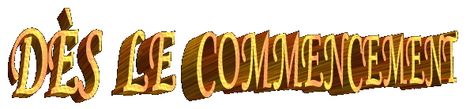

(Antécédents)
 L'Eucharistie est le
centre de la foi qui rassemble les Chrétiens du monde entier, en face de la
réalité qui Le SEIGNEUR JÉSUS CHRIST est présent dans Corps, Sang, Âme et
Divinité dans l'Hôte et dans le Vin Consacrés. C'est allé la manière sensible
choisie par LUI pour rester près de tous ces qui l'aiment et qui ont besoin de
SON aide Divine.
L'Eucharistie est le
centre de la foi qui rassemble les Chrétiens du monde entier, en face de la
réalité qui Le SEIGNEUR JÉSUS CHRIST est présent dans Corps, Sang, Âme et
Divinité dans l'Hôte et dans le Vin Consacrés. C'est allé la manière sensible
choisie par LUI pour rester près de tous ces qui l'aiment et qui ont besoin de
SON aide Divine.
Toutefois, l'Histoire du
Christianisme décrit, qui quelques-uns Chrétiens et non Chrétiens dans plusieurs
parties du monde, ils mentent le doute dans cette vérité et discutent que l'Hôte
est seulement "un symbole" de la Présence de JESUS et qui la Saint Messe, n'est pas le mémorial de la Passion
et du Sacrifice du FILS DE DIEU, mais simplement la mémoire du dernier banquet accompli
dans le Cénacle, sur Jérusalem, qui veut dire, une mémoire du Dernier Dîner que Le
SEIGNEUR a participé à la compagnie de SES Apôtres. Et dans cette même ligne de
l'incrédulité, quelques-uns affirment, qui la présence physique du CHRIST dans
l'Hôte et dans le Vin Consacré c'est une fantaisie.
Cependant, l'Institution
du Sacrement de l'Eucharistie n'est pas un fiction, il n'a pas été inventé par
l'Église Catholique Apostolique Romaine et aussi, l'Eucharistie n'est pas une
"représentation" du DIEU Vivant, mais la Présence Royal et Vraie du SEIGNEUR dans
le milieu des gens qu'IL est créé, qu'IL guide, IL soutient, IL inspire et IL protège
pendant le cours de l'existence, afin que chaque personne peut sentir le plaisir de
vivre, et chaque personne ait conditions de réaliser avec plus de zèle, de dignité
et de joie la mission de sa existence, en sanctifiant son esprit et au même temps
que en construisant dans l'éternité son habitation définitive. Car nous sommes
les semences de DIEU.
Ces ils sont les motifs plus importants qui ont agi dans la Volonté de JÉSUS
par LUI rester parmi nous.
Ici, vous trouverez les citations de l'Écriture Sacrée
qu'ont prédite la création du Sacrement Divin et les textes avec les mots de Le SEIGNEUR
qui a institué l'Eucharistie, aussi bien une substantielle argumentation qui rehausse
l'existence du phénomène de la «Transsubstantiation» pendant la Saint Messe. Le
phénomène advient sous l'action du SAINT-ESPRIT qui transforme les espèces du
pain et vin, dans Corps, Sang, Âme et Divinité de JÉSUS, bien que les apparences
du pain et du vin soient conservées. Ce fait est certifié par une quantité
notable de manifestations surnaturelles dans lesquelles, le SEIGNEUR prouve
d'une façon impressionnante et admirable, SON Présence Royal dans la
Sacrée Communion.
les mots de Le SEIGNEUR
qui a institué l'Eucharistie, aussi bien une substantielle argumentation qui rehausse
l'existence du phénomène de la «Transsubstantiation» pendant la Saint Messe. Le
phénomène advient sous l'action du SAINT-ESPRIT qui transforme les espèces du
pain et vin, dans Corps, Sang, Âme et Divinité de JÉSUS, bien que les apparences
du pain et du vin soient conservées. Ce fait est certifié par une quantité
notable de manifestations surnaturelles dans lesquelles, le SEIGNEUR prouve
d'une façon impressionnante et admirable, SON Présence Royal dans la
Sacrée Communion.
Par conséquent, cette
présentation au-delà d'être un précieux et admirable témoignage pour ces qui
sont fidèles, représente au-dessus de tout, une alerte sérieuse à ce qui sont
distants, qui ne croient pas dans le Sacrement de l'Eucharistie et dans la
valeur de la Saint Messe, parce que devant de la vérité que le CRÉATEUR montre à
l'humanité à travers des Miracles Eucharistiques, les discussions contraires se
font naufrager sans consistance et tombent dans le ridicule.
Ainsi, l'accompagnement
attentif des plusieurs faits ici décrits, ils se deviennent dans un instrument
pour perfectionner les connaissances spirituels des personnes, dans une parfait
catéchèse, utile à tous, parce qu'ils seront touchées intérieurement
dans le c'ur et stimulés pour manifester leur amitié au SEIGNEUR, et alors,
bénéficier pour la bonté Divin, ils seront motivés à consacrer leur amour et
son vie entièrement à DIEU.

FAITS QUI ONT PRÉCÉDÉ
L'INSTITUTION DU SACREMENT
 Le premier miracle public
fait pour JÉSUS il s'est passé sur Cana de la Galilée, la demande de SA MÈRE, en
transformant de l'eau dans le vin, en impressionnant les Disciples pour la
grandeur du pouvoir Divin, comme c'est dans l'Évangile écrit pour Saint Jean.
(Jean 2,2-11)
Le premier miracle public
fait pour JÉSUS il s'est passé sur Cana de la Galilée, la demande de SA MÈRE, en
transformant de l'eau dans le vin, en impressionnant les Disciples pour la
grandeur du pouvoir Divin, comme c'est dans l'Évangile écrit pour Saint Jean.
(Jean 2,2-11)
Comme nous pouvons lire dans le texte biblique,
cette manifestation rehausse aussi d'une manière admirable le pouvoir d'intercession
de la MÈRE DE JÉSUS.
Après, IL a réalisé le
magnifique et admirable Miracle de la Multiplication des Pains qu'a été décrite
et rehaussée par les quatre évangélistes: Matthieu (14,16-21), (15,32-38), Marc
(6,35-44), Luc (9,13-17) et Jean (6,1-13).
NOTRE SEIGNEUR propose
l'idée qui la multiplication abondante du pain pour rassasier une foule affamée,
fait une concrète allusion et préfigure dans notre esprit la Sacrée Eucharistie
qui est SON Corps, Sang, Âme et Divinité pour la vie du monde. De la même façon,
comme LUI mystérieusement a multiplié les pains pour rassasier la
"faim matérielle" des gens, JÉSUS, le FILS DE
DIEU se multiplie journellement dans milliers de petites Particules Consacrées
dans toutes las Saints Messes célébrées dans le monde, pour rassasier la
"faim spirituelle" de l'humanité. IL se donne
comme nourriture pour l'esprit, un Sacrement de Vie et Amour pour toutes qui
veulent SON Amitié, SON Affection, SA Protection et SA compagnie Adorable, parce
qu'IL est gage de Vie Éternelle.
Cependant, JÉSUS
premièrement a voulu parcourir un chemin prudent, en apprenant et en expliquant
la doctrine, avant d'instituer le Sacrement de l'Eucharistie, parce qu'IL
comprenait les habitudes et la tradition des Juives. IL savait le type et
l'intensité de la résistance que les Juifs placeraient pour accepter SON Mot
Divin. Dans le Nouveau Testament, Chapitre 6 du livre de Saint Jean, nous
pouvons apprécier dans plénitude les catéchèses du SEIGNEUR et les obstacles
qu'IL a bientôt trouvé parmi les Disciples, hommes simples et ignorants qui ne
comprenaient pas l'essence de la signification de SES Paroles. Alors, IL a dit:
-
"Travaillez, non pour la nourriture qui périt, mais pour celle qui subsiste pour
la vie éternelle, et que le Fils de l'homme vous donnera; car c'est lui que le
Père, que Dieu a marqué de son sceau".
(Jean 6,27)
Les Disciples ont
demandé, où est-ce que la nourriture éternelle c'est?
Jésus a dit à eux:
- "Je
suis le pain de vie. Celui qui vient à moi n'aura jamais faim, et celui qui
croit en moi n'aura jamais soif".
(Jean 6,35)
Au entendre ces mots,
quelques-uns de ces qui le suivaient ont commencé à murmurer, en disant que ce
n'était pas possible parce qu'IL était juste le Fils d'un Charpentier de nommé Jose
que tout le monde connaissait, à ce temps. Alors, comment IL pourrait être le
Pain descendu du Ciel, le Pain de la Vie?
possible parce qu'IL était juste le Fils d'un Charpentier de nommé Jose
que tout le monde connaissait, à ce temps. Alors, comment IL pourrait être le
Pain descendu du Ciel, le Pain de la Vie?
JÉSUS en voyant
l'incrédulité de ces hommes, IL a dit:
- "Il
est écrit dans les prophètes: Ils seront tous enseignés de Dieu. Ainsi quiconque
a entendu le Père et a reçu son enseignement vient à moi. C'est que nul n'a vu
le Père, sinon celui qui vient de Dieu; celui-là a vu le Père. En vérité, en
vérité, je vous le dis, celui qui croit en moi a la vie éternelle.
Je suis le pain de vie. Vos pères ont mangé la manne dans le désert,
et ils sont morts. C'est ici le pain qui descend du ciel, afin que celui
qui en mange ne meure point". (Jean 6,45-50)
C'était nécessaire
insister et continuer avec SON authentique catéchèses. JÉSUS a parlé:
- " Je
suis le pain vivant qui est descendu du ciel. Si quelqu'un mange de ce pain, il
vivra éternellement; et le pain que je donnerai, c'est ma chair, que je donnerai
pour la vie du monde". (Jean 6,51)
Ce commentaire a causé
plus de consternation parmi les Disciples, parce que le SEIGNEUR parlait
objectivement, sans subterfuges et sans circonlocutions, en montrant à eux la
réalité qu'ils avaient besoin de comprendre. Toutes étaient invités à manger de
SON Corps... Mais c'était un acte inconcevable dans la pensée de ce temps et
principalement inacceptable dans le raisonnement des Juifs. Mais JÉSUS parlait
sérieux d'un mystérieux secret qui n'avait pas été révélé à eux et pour cette
raison, IL a accentué avec emphase la signification des paroles qu'IL avait
dit:
- " En
vérité, en vérité, je vous le dis, si vous ne mangez la chair du Fils de
l'homme, et si vous ne buvez son sang, vous n'avez point la vie en vous-mêmes.
Celui qui mange ma chair et qui boit mon sang a la vie éternelle; et je le
ressusciterai au dernier jour. Car ma chair est vraiment une nourriture, et mon sang
est vraiment un breuvage. Celui qui mange ma chair et qui boit mon sang demeure
en moi, et je demeure en lui". (Jean
6,53-56)
Alors, aujourd'hui nous
devons comprendre qui JÉSUS n'établissait pas d'emblèmes, de symboles et IL ne
parlait pas dans un chemin comparatif. IL parlait de LUI-MÊME, au sujet de SON
Corps et SON Sang qui seraient donnés pour la vie du monde. Ils étaient dans une
Synagogue dans Capharnaüm, et beaucoup de SES Disciples, après avoir entendu ces
paroles, ont dit:
-
"Cette parole est dure! Qui peut l'écouter"?
(Jean 6,60)
Ils étaient découragés et
sans stimulus par continuer dans la mission.
IL encore a dit:
-
"C'est l'esprit qui vivifie; la chair ne sert de rien. Les paroles que je vous
ai dites sont esprit et vie". (Jean
6,63)
 NOTRE SEIGNEUR savait par
anticipation, l'impact fort qui causerait SES Paroles et aussi, IL espérait la
réaction des Disciples qui ne croyaient pas entièrement en LUI. Vraiment,
beaucoup d'eux bientôt si ont rebellé et ont abandonné JÉSUS. En observant que
seulement sont restés les douze Apôtres, JÉSUS a dit à eux:
NOTRE SEIGNEUR savait par
anticipation, l'impact fort qui causerait SES Paroles et aussi, IL espérait la
réaction des Disciples qui ne croyaient pas entièrement en LUI. Vraiment,
beaucoup d'eux bientôt si ont rebellé et ont abandonné JÉSUS. En observant que
seulement sont restés les douze Apôtres, JÉSUS a dit à eux:
- "Et
vous, ne voulez-vous pas aussi vous en aller"?
(Jean 6,67)
Simon Pierre LUI répondit:
- "
SEIGNEUR, à qui irions-nous? Tu as les paroles de la vie éternelle. Et nous
avons cru et nous avons connu que tu es le CHRIST, le Saint de DIEU".(Jean 6,68-69)
La confession de Pierre a
été authentique et merveilleuse, parce que sans comprendre le Mystère Divin, il
a accepté les mots de NOTRE SEIGNEUR, convaincu de qu'ils étaient l'expression
de la vérité.
JÉSUS avec patience et
objectivité allait en catéchisant le c'ur de ces qu'IL avait choisi comme les
témoins de SA Résurrection et pour divulguer le Christianisme. Toujours plaçait
dans évidence, en disant aux Disciples que la doctrine qu'IL apprenait n'était
pas la SIENNE, mais de SON PÈRE qui l'a envoyé. Et ainsi les Disciples ont cru
dans LUI.
Dans ce manière, NOTRE
SEIGNEUR a continué héroïquement avec SA Divine Mission de racheter et rédimer
l'humanité de toutes les générations, dans obéissance à la Volonté du SAINT
PÈRE, au-delà de offrir avec SON exemple, un témoignage de dimensions infinies,
en révélant la grandeur du Amour de DIEU pour tout de nous.
Page Ensuite
 Revient à l'Index
Revient à l'Index